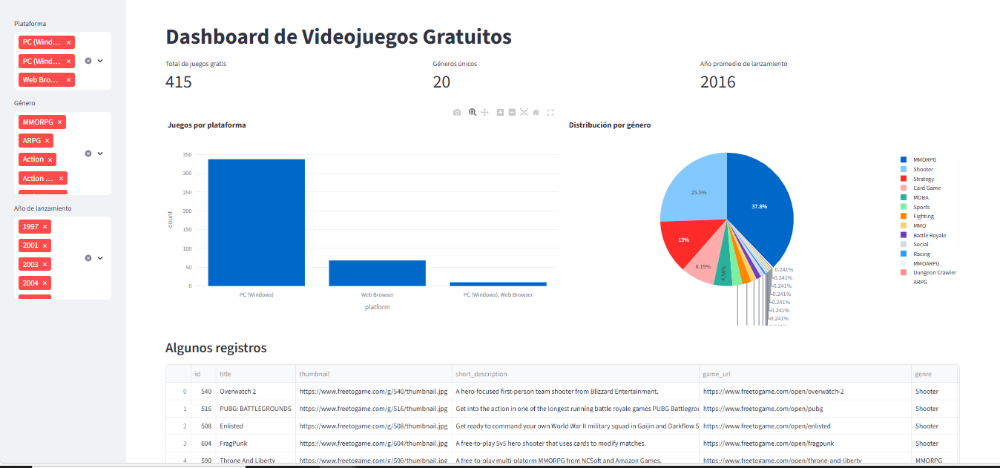

Código Python
import requests
import pandas as pd
import streamlit as st
import plotly.express as px
st.set_page_config(page_title="Videojuegos Gratuitos Dashboard", layout="wide")
@st.cache_data
def load_data():
url = "https://www.freetogame.com/api/games"
resp = requests.get(url)
resp.raise_for_status()
df = pd.DataFrame(resp.json())
return df
df = load_data()
st.title("Dashboard de Videojuegos Gratuitos")
platforms = sorted(df['platform'].unique())
genres = sorted(df['genre'].unique())
release_years = sorted(df['release_date'].str[:4].unique())
plat_filter = st.sidebar.multiselect("Plataforma", options=platforms, default=platforms)
genre_filter = st.sidebar.multiselect("Género", options=genres, default=genres)
year_filter = st.sidebar.multiselect("Año de lanzamiento", options=release_years, default=release_years)
df['release_year'] = df['release_date'].str[:4]
filtered = df[
(df['platform'].isin(plat_filter)) &
(df['genre'].isin(genre_filter)) &
(df['release_year'].isin(year_filter))
]
total_games = len(df)
unique_genres = df['genre'].nunique()
avg_release_year = df['release_year'].astype(int).mean()
col1, col2, col3 = st.columns(3)
col1.metric("Total de juegos gratis", total_games)
col2.metric("Géneros únicos", unique_genres)
col3.metric("Año promedio de lanzamiento", f"{avg_release_year:.0f}")
col1, col2 = st.columns(2)
with col1:
plat_counts = filtered['platform'].value_counts().reset_index()
plat_counts.columns = ['platform', 'count']
fig1 = px.bar(plat_counts, x='platform', y='count', title="Juegos por plataforma")
st.plotly_chart(fig1, use_container_width=True)
with col2:
genre_counts = filtered['genre'].value_counts().reset_index()
genre_counts.columns = ['genre', 'count']
fig2 = px.pie(genre_counts, names='genre', values='count', title="Distribución por género")
st.plotly_chart(fig2, use_container_width=True)
st.subheader("Algunos registros")
st.dataframe(filtered.head(20), use_container_width=True)
Ver código completo en GitHub
Captura del Dashboard
